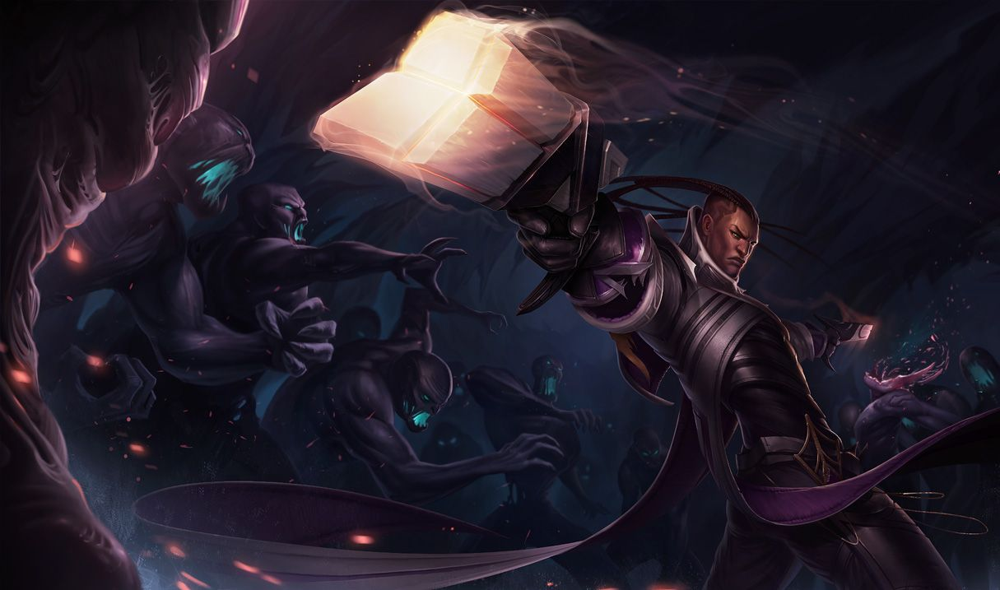

루시안
루시안
루시안, 정화의 사도
Lucian, the Purifier

1. 배경
2. 스킬
2.1. 패시브 - 빛의 사수(Lightslinger)
경계: 아군이 루시안에게 이로운 효과를 주면 다음 2회의 기본 공격이 추가 마법 피해를 입힙니다. 경계로 강화된 기본 공격은 최대 4회까지 충전할 수 있습니다.
3.5초 내에 공격하지 않으면 효과가 사라집니다.
2.2. Q - 꿰뚫는 빛(Piercing Light)
2.3. W - 타는 불길(Ardent Blaze)
루시안이나 아군이 표식이 남은 적을 공격하면 1초 동안 루시안의 이동 속도가 상승합니다.[20] 아군이 이 효과를 발동시키면 루시안이 경계 효과도 얻습니다.
2.4. E - 끈질긴 추격(Relentless Pursuit)
2.4. R - 빛의 심판(The Culling)
총을 난사하는 도중에 끈질긴 추격을 사용할 수 있습니다.
3. 장점
강력한 단일 대상 순간 폭딜
스킬 사용 시 두 번 공격하는 패시브와 공격 속도에 비례하여 시전 속도가 빨라지는 꿰뚫는 빛(Q)에 어마무시한 총 딜량을 가지는 빛의 심판(R) 등으로 인해, 루시안의 단일 대상 순간 폭딜은 원딜 중 최고이며, 너무도 강력한 순간딜 때문에 루시안과의 라인전은 맞딜로 이기는 게 아니라 딜을 흘려내야 하는 구도로밖에 성립할 수 없다. 이는 루시안에게 라인전 주도권과 선공권을 가져와준다.유연한 카이팅 및 플레이메이킹과 자유로운 포지셔닝 능력
취약한 시간대가 크게 없음
원거리 딜러는 크게 정석적인 중후반 성장과 캐리를 지향하는 후반형 챔피언과, 그런 챔피언을 찍어 누르는 안티 캐리용 초반형 챔피언으로 구분한다. 그런데 루시안은 초반 라인전 능력이 막강하면서도, 중반 대치 구도에서 빛의 심판(R)으로 매서운 포킹 및 누킹이 가능하며, 패시브 '경계' 효과를 받는다는 전제가 필요하지만 후반 화력 투사에서도 그럭저럭 활약할 수 있다. 즉, 루시안은 어떤 시간대에서도 크게 힘이 빠지지 않는 가장 무난한 원딜 챔피언 중 하나로 대회와 솔랭을 가리지 않고 자주 사랑받는 챔피언이다.유동적인 아이템 빌드와 메타 적응 능력
4. 단점
짧은 교전 사거리
루시안의 고질적인 문제점. 500에 불과한 사거리는 결코 완벽히 극복해낼 수 없는 큰 숙제다. 원거리 딜러에게 사거리가 얼마나 중요한 요소인지를 생각한다면 이는 굉장히 치명적인 단점으로 루시안은 이 짧은 사거리 때문에 인파이팅을 강제당한다. 물론 강력한 피해량을 가진 궁극기인 빛의 심판(R)이 어느 정도 그 공백을 메꾸는 역할을 하지만, 궁극기라 쿨타임도 긴데다 범위도 좁아 피하기 쉽기 때문에 한계치는 분명하다.부실한 유틸리티
서포터 상성을 다소 가림

저작물은 CC BY-NC-SA 2.0 KR에 따라 이용할 수 있습니다. (단, 라이선스가 명시된 일부 문서 및 삽화 제외)